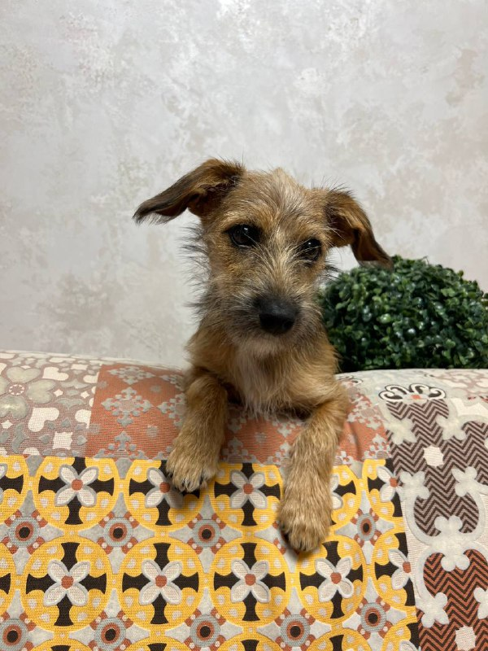
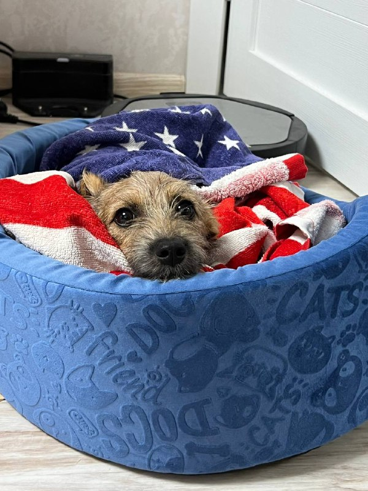
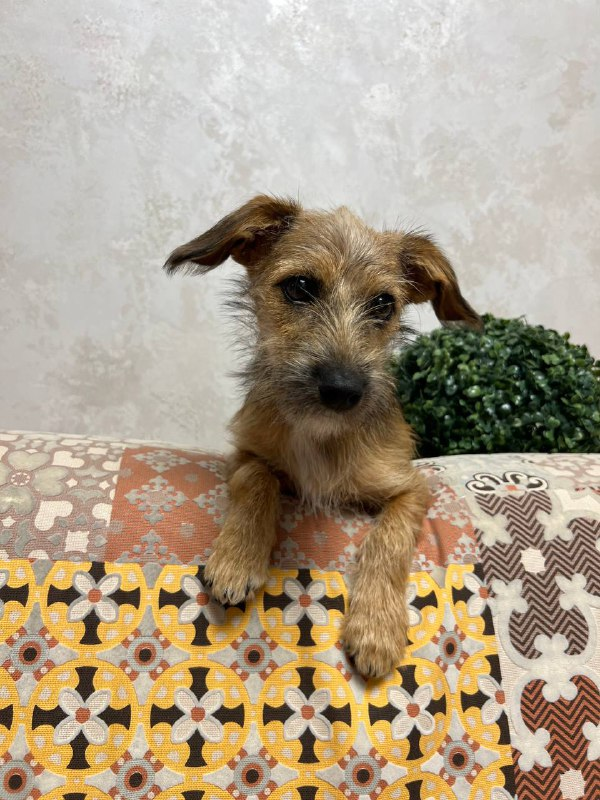
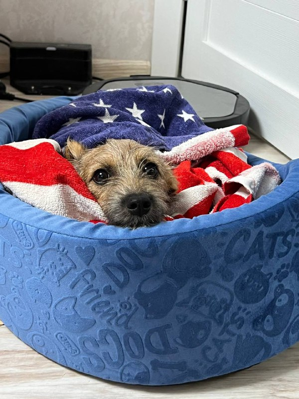

Обо мне
С десятилетия дисциплины на корте — к строке кода. С 3 лет я шлифовал мастерство в большом теннисе, но травма плеча изменила планы, открыв новую страницу: программирование. Уже в 16 лет, самоучкой, я получил первую работу iOS-разработчиком. Создавая приложения, я осознал мощь веба как главного инструмента для бизнеса и самовыражения, что и определило мой новый фокус. Где бы я ни играл — на корте или в цифровом пространстве — я привык бить точно в цель.
Мои проекты здесь: [GitHub]
Компьютеры!
Мой рабочий день преимущественно состоит из написания кода. Этот
процесс представляет собой непрерывный цикл решения задач, поиска
оптимальных решений и, конечно, отладки, которая порой занимает
больше времени, чем предполагалось изначально.
Вы можете [Ознакомиться с моими работами],
если вам интересно.
В качестве основных инструментов я использую JavaScript и React, к которым испытываю глубокую профессиональную симпатию за их гибкость и возможности. Параллельно я поддерживаю навыки в Swift, уделяя время решению [алгоритмических задач], что служит отличной гимнастикой для ума.
Основной фокус моей деятельности, однако, смещен в сторону веб-разработки. Это направление требует постоянного изучения нового и предлагает неиссякаемый вызов, что и делает его столь привлекательным для меня, даже несмотря на мою давнюю привязанность к экосистеме Apple.
В связи с этим я ощущаю потребность вступить в профессиональное сообщество единомышленников. Обмен опытом и нетворкинг с коллегами, которые разделяют схожие интересы, представляется крайне ценным как для личного, так и для карьерного роста.
12-летний я увидел свой первый ноутбук:
Теннис!
С трёх лет моя жизнь превратилась в бесконечную погоню за мячиками. Пока другие дети учились складывать кубики, я уже вовсю лупил форхендом по родительским вазам и люстрам. Теннисная ракетка стала моим продолжением руки — иногда я даже ей ел и чесал за ухом.
Профессиональная карьера началась с того, что я обыгрывал всех в садике, получая за победы не кубки, а лишнюю порцию компота. Соперники плакали, тренеры хватались за голову, а я просто наслаждался хаосом. Теперь я с ностальгией вспоминаю те времена, когда самый большой стресс — это промахнуться по мячу и попасть в воспитательницу.
Вот несколько фотографий на теннисном корте:

Альфа!
Моя собака Альфа — не просто друг, а личный IT-специалист по утилизации техники. Ее хобби — коллекционировать провода от моего макбука. Уже пять штук в ее «портфолио»! Каждый раз, глядя на ее невинные глаза, я понимаю: это не вредительство, а перформанс. Она просто считает, что у ноутбука слишком много лишних деталей. Ее девиз: «Меньше проводов — больше свободы!»
 



Проекты!
Вот неполный и неупорядоченный список, над которыми я работал:
- [EstablishmentsApp] : Приложение для поиска ресторанов поблизости.
- [IOSInterviewApplication] : Приложение для помощи в подготовке к собеседованиям.
- [VK_GeekBrains] : Приложение, сполользующее API ВКонтакте, клонируя данные пользователя.
- [zen] : Приложение для интернет-магазина.
- [SmartStuffApp] : Приложение для управления технических 'Умных' вещей (робот-пылесос, ночники).